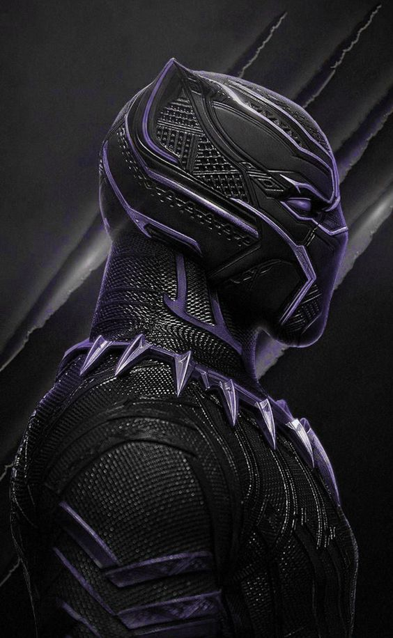

Home
Para começar o texto sobre o filme do Pantera Negra eu vou ter que fazer um desvio no tempo para contextualizar você da importância e da história por trás desse personagem incrível.
O Ano é 1947 e nós temos a revista chamada All-Negro Comics, uma revista que foi edição única que foi escrita e desenhadas por pessoas negras. De fato foi um salto enorme para uma sociedade que era majoritariamente racista e segregada. Em qualquer meio que um negro fosse retratado era de uma forma caricata, racista e de completo mal gosto e o maior exemplo disso era o artista Daddy Rice que encarnava um personagem chamado Jim Crow. Ele foi um dos percursores do Blackface e mais tarde este mesmo nome foi usado para dar nome a uma lei que institucionalizava a segregação racial que vigorou de 1876 até 1965. Claro que não teve somente o Daddy Rice fazendo caquinha, histórias celebres como Tintim no Congo também colocava o negro de uma maneira racista e por isso que a All-Negro Comics era um salto no status quo da época.
Em 1950 temos a estreia do Waku, Prince of the Bantu. Waku teve sua história publicada dentro da revista Jungle Tales que era publicada pela Atlas Comics que mais tarde seria a Marvel Comics. Só em 1965 que um personagem negro ganharia sua revista própria, Lobo um personagem de western publicado pela Dell Comics. Todos esses personagens e revistas antecederam a chegada do todo poderoso rei T’Challa em 1966. Ele fez sua primeira aparição em Fantastic Four #52 e assim ele foi coroado como o primeiro super-herói negro dos quadrinhos.
Existem duas versões da criação do Pantera. Uma delas é que existia um personagem pulp que tinha uma pantera negra como ajudante e isso inspirou o Stan Lee a nomear o personagem. A outra é que ele teve inspiração no movimento dos Panteras Negras e faz mais sentido por ser um personagem que foi criado na mesma época do movimento. Já o Jack Kirby queria dar o nome ao personagem de Coal Tiger e por um breve momento o Pantera Negra mudou de nome e ficou sendo chamado Black Leopard, justamente para não ser associado com o movimento, felizmente esse nome não durou muito. Mesmo levando em consideração que ele não foi baseado no movimento, o cara que é o showrunner de Luke Cage (Cheo Hodari Coker) disse que um dos primeiros cartazes do filme foi uma inspiração ao Huey Percy Newton, um dos cofundadores do movimento.
Para mais detalhes acesse: https://medium.com/9quadros/um-acontecimento-chamado-pantera-negra-1f00d9d9f2f9